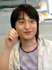
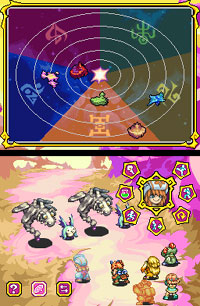
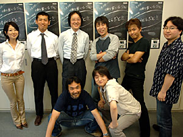

| ＮＯＭ：ニンテンドーＤＳのRPGのスタンダードを作りだす上で具体的にはどういうところがポイントになりましたか？ |
| 呉服：やはりタッチペンを使った軽快な操作であったり、上下2画面を使ったゲームシステムや演出になるでしょうか。まず、あえて全てタッチペンでプレイするという割り切りを行いました。否定的な意見が出る事は予想していましたが、これによって「ＤＳのRPGはタッチペン操作がスタンダード」という新しい側面を作りたかったのです。また、２画面を魔法のエフェクトやデモシーンで有効に使う事も強調してブラウニーブラウンにお願いしました。 |
| 菱田：世界観はブラウニーブラウンが作り上げた確かなものがありましたから、それをそのまま生かしてもらっています。ニンテンドーＤＳでRPGを作るとどんな新しい可能性が生まれるか期待しました。 |
| 井上：本作を作り始めた当時はニンテンドーＤＳがまだ発売されていない時期で、書類上でしか仕様を確認できなかったんです。実際に画面をタッチした感触がどんな風になるのかなかなか見当がつかない。作りながら調整していった部分はありますね。 |
松浦：バトルシステムの場合は、初期段階だとタッチペンをグルグル回して魔法を唱えるという仕様だったんです。しかし、実際にバトルで毎回タッチペンをグルグルするのは疲れないかという意見もあって。その次に出されたのが魔方陣を描く仕様です。でも、やっぱり複数の魔方陣を覚えてもらうのも大変ですよね。最終的にはタッチペンで特殊な操作をさせるよりも、タッチペンの良さを残しながらもっとスマートに遊べるのが一番ではないか、という形に落ち着きました。

井上：オールタッチ操作だからこそ、複雑なことをさせたくなかったんです。 |
| 白川：そうですね。タッチペンを手軽に使うというシステムを考案してもらいました。操作方法に特化しない要素で現在残っているのはマジカルブレイクとジャストガードになります。 |
| ＮＯＭ：では、前作のファンに向けて、今回注目して欲しいポイントはどこでしょう。 |
| 井上：前作が16種類もの精霊を集めるという、わりとヘビーなシステムだったので少し見直しています。そこらへんはシンプルにして、より多くの人に楽しんでもらえるものにしています。 |
| 白川：それに精霊の種類は減っていますけど魔法のエフェクトがそれぞれハデになっているんですよ。 |
呉服：今回の開発を経て、ニンテンドーＤＳの上下2画面というのはRPGにおけるグラフィック面でハデな演出をさせるのに適していると感じました。
あとは、前作では属性の相関図というのがあったんですけど、今回は星の運行図がその役割を果たしているといえるでしょう。時間によって5つの星が刻々と位置を変えてくるので、それを考えて戦略を練るのが楽しいんです。
|
 |
| 井上：舞台を宇宙にするというのは最初のプランからありました。せっかく宇宙で遊ばせるんだから星が大きく影響するものにしています。そして、それだけにとどまらず星自体を魔法で自在に動かせるような設定にしたいと考えたんです。 |
| 松浦：ゲームを進めていくとプレイヤーが運行図上にある星を魔法で動かせるようになるんです。じつは敵のほうも動かしてくるので、後半のバトルでは駆け引きが必要になってきます。 |
| 菱田：バトル中は敵の属性を考えて誰に攻撃を任せるか、星を動かす役目を誰にするか、このへんがポイントになってきますね。ところで、運行図にある5つの星を一列に並べたことがありますか？ |
| ＮＯＭ：最後に『マジカルバケーション 5つの星がならぶとき』ユーザーの方へメッセージをお願いします。 |
呉服：まずはブラウニーブラウンが描き出す見事なドット絵に驚いてください。タッチペンで操作することの遊びやすさにも期待してほしいですね。
白川：プレイしても楽しいし、眺めているだけでも楽しいRPGです。前作のファンならゲームの端々まで要チェックですよ。あと、イベントにおける演出の“間”にも注目してください。
菱田：全編タッチペンだけで遊べるRPGというのを経験していただきたいです。大画面じゃなくても迫力って感じることができるだなと、このゲームが教えてくれると思います。任天堂とブラウニーブラウンが作り出した渾身の１作です。 |
| 松浦：今回は演出面で個性的な試みができたと思うので、イベントにおけるボスとのバトルを楽しんでほしいですね。運行図の星を動かしてハデに勝ってください！ |
| 増子：サウンドとしては色々なものをギュッと詰め込んだ形になっています。遊びの部分も多くて、聞いた人がニヤッとできる部分も盛り込んでいます。スタッフ達のボイスもお楽しみに。 |
| 津田：グラフィックを効果的に見せるためのシンプルデザインを感じてほしいです。サウンド同様グラフィックも遊び要素がけっこうあります。色々なところに注目してみてください。 |
| 井上：前作に引き続き、不思議なキャラや味のあるキャラがたくさん出てきます。彼らとの珍妙な会話を楽しんでもらえれば。それと吉祥寺駅近辺に来られる方でしたら、スタッフとすれちがいアミーゴできる確率が高いと思います。どんな内容の手紙が受け取れるかはヒミツです。 |
| 亀岡：そんなにマニアックなRPGではないので、いままでRPGを触ったことのない人も気軽に楽しめます。そしてこのゲームが好きになったら、ぜひ我々のRPGのファンになってください。 |
 菱田：イベントのアクセントとなるムービーも最初の予定よりもかなり多くなりましたよね。こちらとしては、3Dで作成したキャラクターを上下2画面で使ったムービーになるとは予想していなかったので、データを見せてもらったときは驚きました。
菱田：イベントのアクセントとなるムービーも最初の予定よりもかなり多くなりましたよね。こちらとしては、3Dで作成したキャラクターを上下2画面で使ったムービーになるとは予想していなかったので、データを見せてもらったときは驚きました。